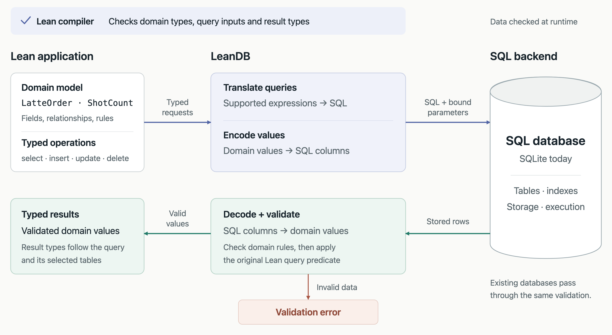

LeanDB: A strongly typed SQL Frontend
At Theoric Labs we believe AgenticAI combined with Formal methods can “solve” software. Essentially, we belive software will be fast, and bug free.
LeanDB is an experiment in applying part of this idea to databases: describe our data and its properties in Lean, while using SQL databases for storage and querying.
A Primer on Types in Lean
Types are powerful because they allow us to check properties before the code is run. A function expecting a number should not accidentally receive a string.
Lean takes this much further. We can express properties as propositions, construct proofs of those properties, and have Lean check those proofs. Expressing a property does not mean Lean will automatically prove it, but it gives us a precise statement of what needs to be established.
Let’s use a café menu as an example. We want to describe the products we sell, their available configurations, and the rules which make an order valid.
The following examples illustrate the modeling approach, rather than the current feature set of the LeanDB prototype.
Inductive Types
An inductive type describes the ways a value can be constructed. Different cases can contain different information, and a case can contain more values of the same type.
For our café, we can start with the available temperatures and milks:
inductive Temperature where
| hot
| iced
inductive Milk where
| dairy
| oat
| almondWe can then describe our menu:
inductive MenuItem where
| latte (temperature : Temperature) (milk : Milk)
| pastry (name : String)
| bundle (items : List MenuItem)A latte has a temperature and a milk choice. A pastry has a name. A bundle contains other menu items:
def breakfast : MenuItem :=
.bundle [
.latte .hot .oat,
.pastry "Croissant"
]We don’t need to represent everything as one record with a collection of optional fields. A pastry does not have an irrelevant milk field, and a latte cannot be constructed without a milk choice.
The bundle case also makes this recursive: a bundle can contain individual items or other bundles. We have described a whole family of possible menu items using a small set of construction rules.
Refinement Types
Sometimes an ordinary type allows more values than our application should accept.
Suppose our café allows between one and four espresso shots in a latte. A natural number is not enough to describe this: it also allows zero, five, or a million.
We can refine it:
abbrev ShotCount :=
{ n : Nat // 0 < n ∧ n ≤ 4 }This means: a natural number n, together with a proof that it is greater than zero and at most four. Lean represents this using a subtype.
A double shot is valid:
def doubleShot : ShotCount :=
⟨2, by decide⟩The 2 is the value. The by decide supplies a proof of the simple arithmetic condition.
These attempted definitions would be rejected:
-- Rejected: zero does not satisfy the condition.
-- def noShots : ShotCount := ⟨0, by decide⟩
-- Rejected: five does not satisfy the condition.
-- def fiveShots : ShotCount := ⟨5, by decide⟩Now a function accepting a ShotCount receives not just a number, but a number whose range has been established.
What about a number coming from a user at runtime? We still have to check it:
def parseShotCount (n : Nat) : Option ShotCount :=
if h : 0 < n ∧ n ≤ 4 then
some ⟨n, h⟩
else
noneThe successful branch has evidence that the condition holds, so it can construct a ShotCount. The unsuccessful branch returns none. This is the same general approach used when decoding external data into types with stronger guarantees.
The point is not to eliminate all runtime validation. It is to make the result of validation explicit, so the rest of the application can use it.
Dependent Types
Sometimes whether one choice is valid depends on another choice.
Suppose our café serves hot lattes in small, medium, and large cups, but iced lattes only in medium and large cups.
We could represent temperature and size as two independent fields and check their combination later. Instead, we can make the type of the size depend on the temperature:
inductive CupSize : Temperature → Type where
| small : CupSize .hot
| medium : {t : Temperature} → CupSize t
| large : {t : Temperature} → CupSize tHere, CupSize .hot and CupSize .iced are related but different types. The small constructor is only available for the hot version. This is an example of an indexed family: the index determines which constructions are available.
We can use this in an order:
structure LatteOrder where
temperature : Temperature
size : CupSize temperature
milk : Milk
shots : ShotCountNotice the field:
size : CupSize temperatureThe type of size depends on the value of temperature.
An iced oat latte with two shots is valid:
def icedOatLatte : LatteOrder :=
{ temperature := .iced
size := .large
milk := .oat
shots := doubleShot }But there is no small iced size in this model:
-- Rejected: .small has type CupSize .hot,
-- not CupSize .iced.
-- def smallIced : CupSize .iced := .smallWe have now combined several ideas. The milk must be one of the choices we defined. The number of shots must satisfy a range constraint. The available cup sizes depend on the temperature.
These are not just comments describing what a valid order should look like. They are part of the type of the order.
Meta Types: Data That Describes a Type
So far, we have written our menu choices directly in Lean. But what happens when the café wants to define new choices as data?
Perhaps one product has a milk selector, another has a gift-wrap toggle, and another has a field for a message.
Lean allows functions to return types. We can use this to define a small language of field descriptions, then interpret those descriptions into actual Lean types. This is commonly called the universe design pattern.
inductive FieldSpec where
| text
| toggle
| choice (options : List String)A field can contain text, a Boolean choice, or one of a specified list of strings.
Now we define what a value of each field looks like:
def FieldSpec.Value : FieldSpec → Type
| .text => String
| .toggle => Bool
| .choice options =>
{ value : String // value ∈ options }The important thing here is that FieldSpec.Value returns a type, not a string describing a type.
For a milk selector:
def milkField : FieldSpec :=
.choice ["Dairy", "Oat", "Almond"]
def selectedMilk : FieldSpec.Value milkField :=
⟨"Oat", by decide⟩The allowed choices are now represented as ordinary data. That data determines the type of a valid selection.
A different list of choices gives us a different restriction:
def syrupField : FieldSpec :=
.choice ["Vanilla", "Caramel"]
def selectedSyrup : FieldSpec.Value syrupField :=
⟨"Vanilla", by decide⟩This is what I mean here by “meta types”: data which describes a type.
A larger version could describe a whole product configuration, with several fields and rules relating them. The product definition would describe what can be configured, and an interpretation function would determine the type of a valid configuration.
The examples above use definitions known when the code is checked. A specification loaded from a database would still need to be decoded at runtime, and a submitted value checked against that specification. Dependent types let us preserve the relationship between the specification and the accepted value; they do not make future database contents known at compile time.
Why do we need a strongly typed database?
If you accidentally try to push bad data, the compiler will prevent you from doing so.
Wrong type in a column:
def bob : Row users := .cons "bob" (.cons "bob@example.com" (.cons true .nil)) -- does not compileerror: Application type mismatch: The argument
"bob"
has type
String
but is expected to have type
Ty.int.denoteMissing column:
def carol : Row users := .cons 3 (.cons "carol@example.com" .nil) -- does not compileerror: Application type mismatch: The argument
Row.nil
has type
Row []
but is expected to have type
Row [("active", Ty.bool)]Look at that second error. The compiler is telling you exactly which column you forgot.
If you accidentally miss a validation, your compiler tells you.
Say withdrawing from an account requires that the account has enough balance. Put that requirement into the function's type.
structure Account where
id : Nat
balance : Nat
def withdraw (a : Account) (amt : Nat) (_ : amt ≤ a.balance) : Account :=
{ a with balance := a.balance - amt }The third argument is a proof. You cannot call withdraw without one.
def overdraw (a : Account) : Account := withdraw a 1000000 -- does not compileerror: Type mismatch
withdraw a 1000000
has type
1000000 ≤ a.balance → Account
but is expected to have type
AccountThe only way to get the proof is to do the check.
def safeWithdraw (a : Account) (amt : Nat) : Option Account :=
if h : amt ≤ a.balance then some (withdraw a amt h) else noneSo the validation is not a thing you remember to do. It is a thing the compiler will not let you forget. This is the exact class of bug that agents introduce: the code works, the tests pass, and the check that used to be there is gone. Here, the check cannot be gone.
More important, and interesting: typed databases let you express queries which are just super hard to express otherwise.
Column access, checked at compile time. First we need a way to say "column n with type t exists in schema s". That is itself a type.
inductive HasCol : Schema → String → Ty → Type where
| here {s : Schema} {n : String} {t : Ty} : HasCol ((n, t) :: s) n t
| there {s : Schema} {n n' : String} {t t' : Ty} : HasCol s n t → HasCol ((n', t') :: s) n tThen a lookup that takes the row and the proof that the column is there.
def Row.get {s : Schema} {n : String} {t : Ty} : Row s → HasCol s n t → t.denote
| .cons v _, .here => v
| .cons _ r, .there h => r.get h
def Row.col {s : Schema} (r : Row s) (n : String) {t : Ty}
(h : HasCol s n t := by repeat constructor) : t.denote :=
r.get hThat by repeat constructor is the compiler searching the schema for the column at compile time. You just write the column name.
#eval alice.col "email" -- "alice@example.com"
#eval alice.col "active" -- trueNotice the return types. alice.col "email" is a String. alice.col "active" is a Bool. Not a Value, not an Any, not a string you cast later. The type of the result depends on which column you asked for.
And a typo:
#eval alice.col "emial" -- does not compileerror: unsolved goals
⊢ HasCol [] "emial" ?m.3The compiler walked the whole schema, ran out of columns, and stopped you. Your SQL database would have told you at 3am.
Now joins. The result schema of a join is computed from the input schemas. In the type.
def Row.append {a b : Schema} : Row a → Row b → Row (a ++ b)
| .nil, r => r
| .cons v l, r => .cons v (l.append r)
abbrev orders : Schema := [("order_id", .int), ("total", .int)]
def joined : Row (users ++ orders) :=
alice.append (.cons 17 (.cons 4200 .nil))
#eval joined.col "total" -- 4200Row (users ++ orders) is a type that was computed by concatenating two lists. You never wrote the joined schema down. The compiler derived it, and joined.col "total" type-checks against the derived schema.
Architecture and Design Philosophy
Lean has an extremely expressive type system. We want to describe the shape of our data in Lean, and use a SQL database as its physical store, for efficient storage and querying.
For the café, the domain model should be able to say more than:
An order has a temperature column, a size column, and a shots column.
It should be able to say:
An order has a temperature, a size valid for that temperature, and a shot count between one and four.
We want the application to work with the second description, even when the underlying storage uses ordinary database columns.
Typed Queries
We also want to preserve and extend the general shape of SQL queries: select, insert, update, and delete.
The idea is that queries are typed in Lean and automatically converted to SQL for execution.
For example, consider a menu table with a name, a price in cents, and an availability flag. A query selecting only names should return strings. A query selecting names and prices should return pairs of names and prices. The result type should follow from the query, rather than being separately declared and kept in sync by hand.
Similarly, referring to a nonexistent field or supplying a string where a numeric value is required should be rejected when constructing the typed query.
This needs a defined query language that LeanDB knows how to translate. The goal is not to assume that any arbitrary Lean function can automatically become SQL.
Preserving the Domain Model
For writes, we want to accept values which satisfy the domain’s requirements.
For reads, we need to reconstruct those values from the stored representation. A row containing an iced latte with a small cup must not silently become a valid LatteOrder.
For example, the shot count stored in a row might be an ordinary integer. Reading that row should include the necessary decoding and validation before producing a ShotCount.
The same applies to existing databases. We want compatibility so that you can bring your existing SQL database into LeanDB, but existing data must be checked against any stronger properties we introduce.
This also gives us a concrete distinction between describing the model and implementing the database layer. Defining LatteOrder in Lean does not, by itself, establish that its SQL encoding, decoding, and queries preserve its meaning. That is part of the work LeanDB needs to do.
Architecture Diagram

Results and Next Steps
The first thing I wanted to see was whether we could actually have even a working prototype of LeanDB. It seems to be the case.
I would like you to try out leanDB.
One thing I want to try from here is using Lean to write frontend and backend applications. This would allow the domain types defined in Lean to be used across the application.